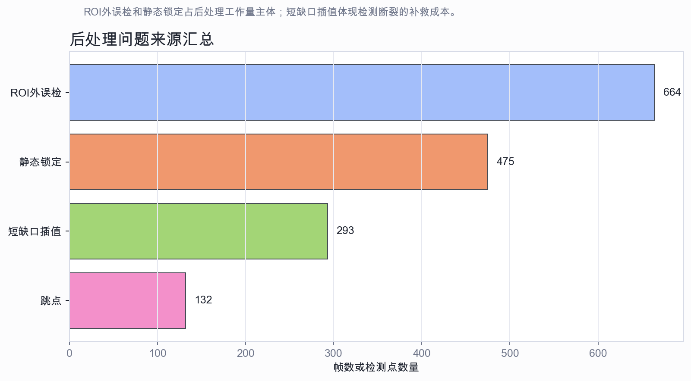
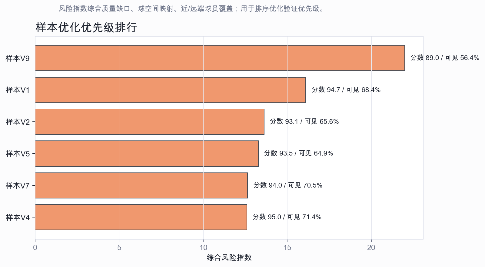

建议：优先做一个“ROI/背景静态锁定预过滤 + 参数化质量门”的优化；扩大模型或改前端展示可放在下一阶段。
原因：9段视频都达到Green，但原始球检测中约32.5%需要被后处理拒绝；其中ROI外误检664个、静态锁定475个，合计占拒绝项的89.6%。这说明首要优化对象应放在进入轨迹后处理前的误检输入质量，前端展示改动优先级较低。
后处理统计显示，ROI外误检和静态锁定是主要工作量。它们会直接造成轨迹跳变、背景固定点和前端质量警告，也会抬高插值需求。

综合质量缺口、球空间映射和球员覆盖后，样本V9仍是最适合做压力测试的样本；样本V1、样本V2和样本V5适合作为次级边界样本。建议用这些样本做参数消融，并用样本V6作为高质量对照。

| 样本 | 质量分 | 可见率 | 空间映射率 | ROI外 | 静态锁定 | 插值 |
|---|---|---|---|---|---|---|
| 样本V9 | 88.96 | 56.4% | 0.0% | 66 | 199 | 83 |
| 样本V1 | 94.67 | 68.4% | 4.9% | 34 | 34 | 9 |
| 样本V2 | 93.14 | 65.6% | 18.5% | 70 | 18 | 29 |
| 样本V5 | 93.53 | 64.9% | 15.0% | 124 | 59 | 24 |
| 样本V7 | 94.02 | 70.5% | 17.4% | 88 | 59 | 28 |
来源：本地质量汇总、逐视频前端数据包、球轨迹CSV、球员运动CSV和轨迹后处理报告。质量分数用于工程展示可靠性，不等同于人工标注真值下的检测准确率。